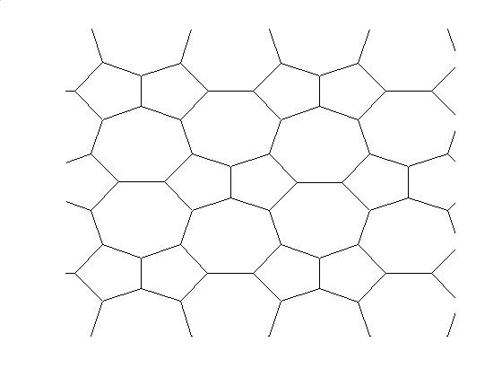
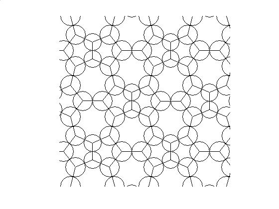
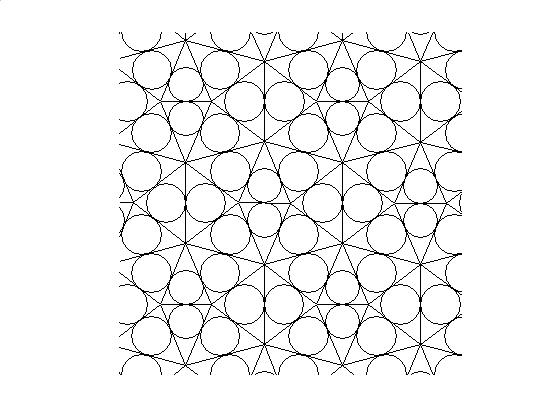
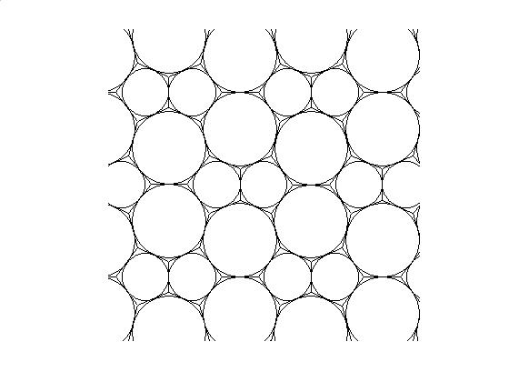
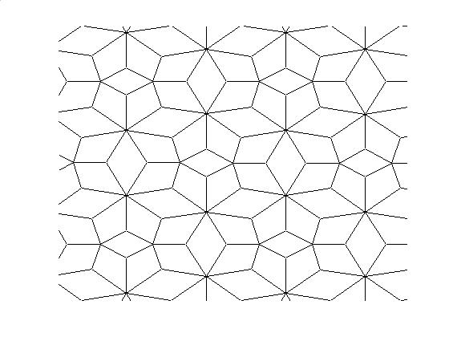
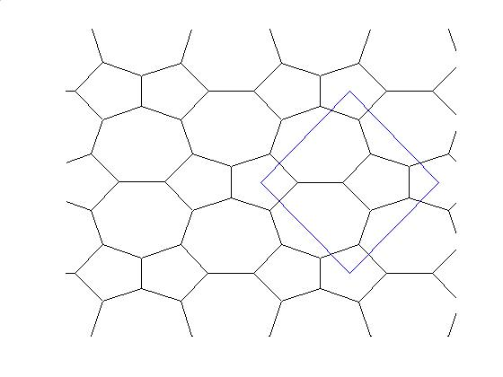
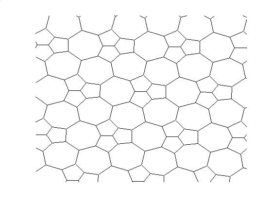
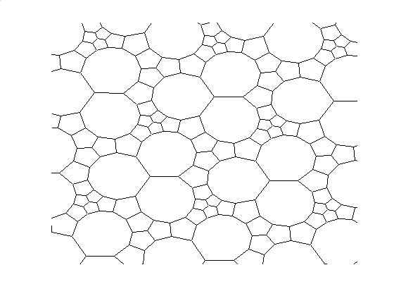
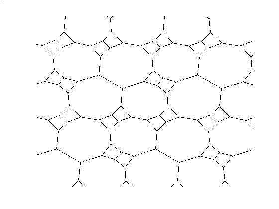
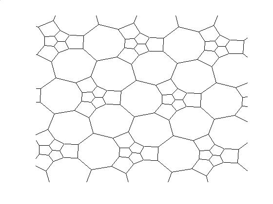

TD_CreateGraph('thetest',[-10 10 -10 10],[1 0 0 0],[0 0 1 0 0 0],[0 0],[1 0;0 1])
edges
TD_CreateGraph('thetest',[-10 10 -10 10],[1 0 0 0],[0 0 1 1 0 0],[0 0],[1 0;0 1])
edges + circles
TD_CreateGraph('thetest',[-10 10 -10 10],[1 0 0 0],[1 0 0 1 0 0],[0 0],[1 0;0 1])
dual edges + circles
TD_CreateGraph('thetest',[-10 10 -10 10],[1 0 0 0],[0 1 1 0 0 0],[0 0],[1 0;0 1])
edges + dual circles
TD_CreateGraph('thetest',[-10 10 -10 10],[1 0 0 0],[0 1 1 0 0 0],[0 0],[1 0;0 1])
radial graph (map obtained by taking as vertex set the set of vertices and faces of the original map and edge set being of the form (v, F) if the vertex v belong to the face F)
TD_CreateGraph('thetest',[-10 10 -10 10],[1 0 0 0],[0 1 1 0 0 0],[0 0],[1 0;0 1])
edges + fundamental domain
|  |  |
|  |  |